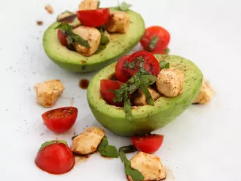

Caprese Stuffed Avocado

Photo by Firstname Lastname
This Caprese stuffed avocado salad is made up of avocado halves,
filled with a simple Caprese salad using cherry tomatoes, mozzarella pearls,
and basil, and drizzled with balsamic vinegar.
Caprese Stuffed Avocado Ingredients
- 1 avocado - peeled, pitted, and cut in half
- 1/4 cup fresh mozzarella pearls
- 1/4 cup cherry tomatoes, halved
- 6 fresh basil leaves, thinly sliced
- 1 tablespoon balsamic vinegar
- salt and pepper to taste
Let's cook it
- Arrange avocado halves onto a plate.
- Toss together mozzarella pearls, cherry tomatoes, and basil in a small bowl.
Spoon the Caprese filling into each avocado half and drizzle with balsamic vinegar.
Season with salt and pepper. Serve immediately.